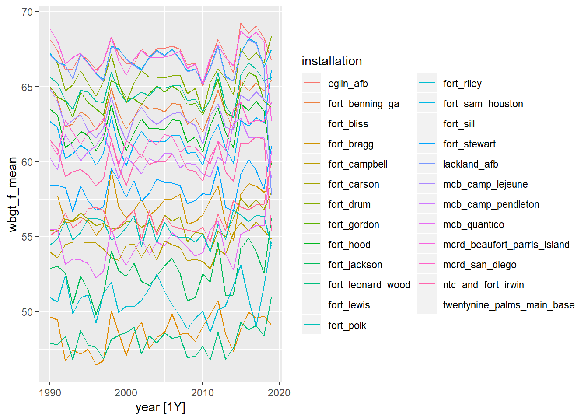

nldas_averaged
We want to use local time for daily averages.
We will modify duplicate times due to the end of daylight savings by adding one second to the repeated time.
nldas_wide <- read_rds("data/nldas_wide.rds")
# Add one second to duplicate times
local_dst_adjust <-
nldas_wide %>%
mutate(row = dplyr::row_number()) %>%
tsibble::duplicates(key = installation, index = local_dttm) %>%
filter(local_dttm != lead(local_dttm, default = "1")) %>%
mutate(local_dttm = local_dttm + seconds(1))
local_dst_adjust## # A tibble: 725 x 20
## utc_dttm local_dttm installation longitude latitude TMP
## <dttm> <dttm> <chr> <dbl> <dbl> <dbl>
## 1 1990-10-28 07:00:00 1990-10-28 01:00:01 eglin_afb -86.5 30.6 287.
## 2 1991-10-27 07:00:00 1991-10-27 01:00:01 eglin_afb -86.5 30.6 296.
## 3 1992-10-25 07:00:00 1992-10-25 01:00:01 eglin_afb -86.5 30.6 292.
## 4 1993-10-31 07:00:00 1993-10-31 01:00:01 eglin_afb -86.5 30.6 279.
## 5 1994-10-30 07:00:00 1994-10-30 01:00:01 eglin_afb -86.5 30.6 292.
## 6 1995-10-29 07:00:00 1995-10-29 01:00:01 eglin_afb -86.5 30.6 285.
## 7 1996-10-27 07:00:00 1996-10-27 01:00:01 eglin_afb -86.5 30.6 296.
## 8 1997-10-26 07:00:00 1997-10-26 01:00:01 eglin_afb -86.5 30.6 297.
## 9 1998-10-25 07:00:00 1998-10-25 01:00:01 eglin_afb -86.5 30.6 288.
## 10 1999-10-31 07:00:00 1999-10-31 01:00:01 eglin_afb -86.5 30.6 292.
## # ... with 715 more rows, and 14 more variables: SPFH <dbl>, PRES <dbl>,
## # UGRD <dbl>, VGRD <dbl>, DSWRF <dbl>, windspeed <dbl>, tmp_f <dbl>,
## # tmp_c <dbl>, rh <dbl>, dp_c <dbl>, heat_index <dbl>, wbgt <dbl>,
## # wbgt_f <dbl>, row <int># Remove rows with duplicate local times and replace with updated rows (+1 second)
nldas_wide <-
nldas_wide %>%
mutate(row = dplyr::row_number()) %>%
filter(!row %in% local_dst_adjust$row) %>%
bind_rows(local_dst_adjust) %>%
arrange(local_dttm) %>%
dplyr::select(-row)
# Check for duplicates
nldas_wide %>%
duplicates(key = installation, index = local_dttm)## # A tibble: 0 x 19
## # ... with 19 variables: utc_dttm <dttm>, local_dttm <dttm>,
## # installation <chr>, longitude <dbl>, latitude <dbl>, TMP <dbl>, SPFH <dbl>,
## # PRES <dbl>, UGRD <dbl>, VGRD <dbl>, DSWRF <dbl>, windspeed <dbl>,
## # tmp_f <dbl>, tmp_c <dbl>, rh <dbl>, dp_c <dbl>, heat_index <dbl>,
## # wbgt <dbl>, wbgt_f <dbl>nldas_tsibble <-
nldas_wide %>%
dplyr::select(installation, local_dttm, tmp_f, heat_index, wbgt_f) %>%
tsibble::as_tsibble(., key = installation, index = local_dttm)Aggregate over calendar periods
Averaged from hourly to daily
nldas_daily <-
nldas_tsibble %>%
tsibble::group_by_key() %>%
tsibble::index_by(date = ~ as.Date(.)) %>% # daily aggregates
dplyr::summarise(
mean_tmp = mean(tmp_f),
max_tmp = max(tmp_f),
min_tmp = min(tmp_f),
sd_tmp = sd(tmp_f),
mean_hi = mean(heat_index),
max_hi = max(heat_index),
min_hi = min(heat_index),
sd_hi = sd(heat_index),
mean_wbgt = mean(wbgt_f),
max_wbgt = max(wbgt_f),
min_wbgt = max(wbgt_f),
sd_wbgt = sd(wbgt_f)
) %>%
filter(date >= date("1990-01-01"))
nldas_daily## # A tsibble: 269,700 x 14 [1D]
## # Key: installation [25]
## installation date mean_tmp max_tmp min_tmp sd_tmp mean_hi max_hi min_hi
## <chr> <date> <dbl> <dbl> <dbl> <dbl> <dbl> <dbl> <dbl>
## 1 eglin_afb 1990-01-01 47.9 54.7 41.8 3.71 45.7 54.1 39.4
## 2 eglin_afb 1990-01-02 47.8 53.8 41.5 4.57 45.5 51.3 39.1
## 3 eglin_afb 1990-01-03 55.8 65.0 48.0 5.46 55.0 64.6 46.6
## 4 eglin_afb 1990-01-04 60.0 66.4 55.8 3.45 59.9 66.8 55.5
## 5 eglin_afb 1990-01-05 60.7 66.7 55.2 4.19 60.8 66.9 54.9
## 6 eglin_afb 1990-01-06 60.5 65.1 56.4 2.64 60.4 65.1 56.2
## 7 eglin_afb 1990-01-07 60.6 64.2 58.1 2.17 60.7 64.6 58
## 8 eglin_afb 1990-01-08 52.3 58.3 46.0 3.75 51.1 57.2 44.6
## 9 eglin_afb 1990-01-09 51.5 61.3 42.8 6.32 50.2 59.8 41.1
## 10 eglin_afb 1990-01-10 56.2 66.6 49.8 6.12 55.2 65.1 49.0
## # ... with 269,690 more rows, and 5 more variables: sd_hi <dbl>,
## # mean_wbgt <dbl>, max_wbgt <dbl>, min_wbgt <dbl>, sd_wbgt <dbl>nldas_daily %>%
filter(date >= date("2019-07-01")) %>%
autoplot(mean_wbgt)
Averaged from hourly to monthly
nldas_monthly <-
nldas_tsibble %>%
tsibble::group_by_key() %>%
tsibble::index_by(year_month = ~ yearmonth(.)) %>% # daily aggregates
dplyr::summarise(
mean_tmp = mean(tmp_f),
max_tmp = max(tmp_f),
min_tmp = min(tmp_f),
sd_tmp = sd(tmp_f),
mean_hi = mean(heat_index),
max_hi = max(heat_index),
min_hi = min(heat_index),
sd_hi = sd(heat_index),
mean_wbgt = mean(wbgt_f),
max_wbgt = max(wbgt_f),
min_wbgt = max(wbgt_f),
sd_wbgt = sd(wbgt_f)
) %>%
filter(year_month >= date("1990-01-01"))
nldas_monthly## # A tsibble: 8,875 x 14 [1M]
## # Key: installation [25]
## installation year_month mean_tmp max_tmp min_tmp sd_tmp mean_hi max_hi min_hi
## <chr> <mth> <dbl> <dbl> <dbl> <dbl> <dbl> <dbl> <dbl>
## 1 eglin_afb 1990 Jan 56.0 74.1 30.4 8.23 55.2 74.0 30.4
## 2 eglin_afb 1990 Feb 60.4 77.2 38.1 7.90 59.9 77.8 37.1
## 3 eglin_afb 1990 Mar 63.1 80.1 35.8 8.54 62.7 81.4 35.8
## 4 eglin_afb 1990 Apr 66.9 86.1 40.3 8.96 66.9 89.7 38.0
## 5 eglin_afb 1990 May 74.8 87.6 54.6 6.89 76.2 93.2 53.6
## 6 eglin_afb 1990 Jun 81.8 92.5 71.0 4.86 86.1 104. 71.7
## 7 eglin_afb 1990 Jul 83.2 93.1 73.8 4.64 88.2 104. 74.9
## 8 eglin_afb 1990 Aug 84.1 94.1 72.0 4.84 90.1 106. 72.8
## 9 eglin_afb 1990 Sep 80.0 93.3 52.7 7.56 83.4 101. 51.7
## 10 eglin_afb 1990 Oct 70.6 89.8 42.8 10.1 71.2 94.1 40.8
## # ... with 8,865 more rows, and 5 more variables: sd_hi <dbl>, mean_wbgt <dbl>,
## # max_wbgt <dbl>, min_wbgt <dbl>, sd_wbgt <dbl>nldas_monthly %>%
filter(year_month >= date("2018-01-01")) %>%
autoplot(mean_wbgt)
Averaged from hourly to annual
nldas_annual <-
nldas_tsibble %>%
tsibble::group_by_key() %>%
tsibble::index_by(year = ~ lubridate::year(.)) %>% # daily aggregates
dplyr::summarise(
mean_tmp = mean(tmp_f),
max_tmp = max(tmp_f),
min_tmp = min(tmp_f),
sd_tmp = sd(tmp_f),
mean_hi = mean(heat_index),
max_hi = max(heat_index),
min_hi = min(heat_index),
sd_hi = sd(heat_index),
mean_wbgt = mean(wbgt_f),
max_wbgt = max(wbgt_f),
min_wbgt = max(wbgt_f),
sd_wbgt = sd(wbgt_f)
) %>%
filter(!year %in% "1989")
nldas_annual## # A tsibble: 750 x 14 [1Y]
## # Key: installation [25]
## installation year mean_tmp max_tmp min_tmp sd_tmp mean_hi max_hi min_hi
## <chr> <dbl> <dbl> <dbl> <dbl> <dbl> <dbl> <dbl> <dbl>
## 1 eglin_afb 1990 70.4 94.1 30.4 12.5 71.9 106. 30.4
## 2 eglin_afb 1991 69.6 94.1 26.7 13.2 71.1 103. 26.7
## 3 eglin_afb 1992 68.3 95.4 30.3 13.0 69.4 104. 30.3
## 4 eglin_afb 1993 68.5 95.2 28.4 13.8 69.8 106. 28.4
## 5 eglin_afb 1994 69.2 91.7 26.6 12.7 70.3 101. 26.6
## 6 eglin_afb 1995 69.0 97.8 27.7 14.2 70.5 109. 27.7
## 7 eglin_afb 1996 68.2 93.9 17.2 14.6 69.5 104. 17.2
## 8 eglin_afb 1997 68.7 97.0 25.1 13.1 70.1 112. 25.1
## 9 eglin_afb 1998 70.4 97.2 29.0 13.3 72.4 106. 29.0
## 10 eglin_afb 1999 69.5 98.2 25.2 13.1 70.9 110. 25.2
## # ... with 740 more rows, and 5 more variables: sd_hi <dbl>, mean_wbgt <dbl>,
## # max_wbgt <dbl>, min_wbgt <dbl>, sd_wbgt <dbl>nldas_annual %>%
autoplot(mean_wbgt)